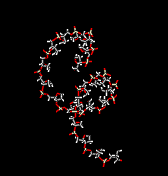

DNA Structure Activity
Problem 2: Is DNA a right- or left-handed helix?
Examine the view labeled "2 separate DNA strands". DNA normally occurs as two separate long polymers ("strands") that wrap around each other in a helical spiral around an imaginary helix axis. If you view the DNA from end on, you will see only a tight circle of atoms. The helix axis would be in the center of this circle. In what direction do the DNA strands spiral away from you around the helix axis?
Tutorial
|  |
A picture of one strand of DNA, showing only the sugar-phosphate backbone, with the bases hidden, is shown to emphasize the helical spiral of the polymer. Note that the backbone spirals away from you with a clockwise spin, indicative of a right-handed helix. Normal B-DNA, as first described by Watson and Crick, is a right-handed helix. The DNA spiral is much easier to view with Mac/PCMolecule2. Note the option under the Display menu to also view the helix in stereo. |


University of Arizona
Modified: May 27, 1997
Contact the Development Team
http://biology.arizona.edu
All contents copyright © 1997. All rights reserved.